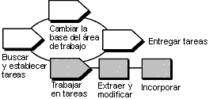

| Instrucciones de la herramienta: Utilización de conjuntos de cambios de UCM con Rational ClearCase |
 |
|
| Elementos relacionados |
|---|
Visión generalEn el diagrama siguiente se ilustra el flujo de trabajo de UCM. En esta guía de la herramienta se tratan las áreas sombreadas. Flujo de trabajo de UCM Nota sobre terminología: Una actividad de UCM de ClearCase correlaciona exactamente con un pedido de trabajo de RUP. No se debe confundir con el concepto de RUP de una actividad. Una actividad de UCM hace un seguimiento de las versiones que se crean al trabajar en una tarea de desarrollo. Una actividad incluye un titular de texto que describe la tarea, el ID de usuario del creador de la actividad y un conjunto de cambios que identifica todas las versiones que se crean al trabajar en la actividad. Cuando esté preparado para modificar archivos de origen, debe establecer la vista de desarrollo para una actividad. Antes de modificar los archivos, debe establecer una actividad para la vista de desarrollo. Esta guía de la herramienta se aplica al ejecutar Microsoft Windows. Pasos de la herramientaPara trabajar con actividades de UCM, debe: 1. Crear o buscar y establecer una actividadCuando extrae archivos o directorios de un proyecto de UCM, se le solicita que especifique una actividad para hacer el seguimiento del trabajo. Cree una nueva actividad y establézcala en la vista actual
Busque y establezca una actividadLas actividades se mantienen entre sesiones de trabajo. Para buscar una actividad existente y establecerla en la vista de desarrollo, siga los pasos que se indican a continuación: En el Explorador de ClearCase:
En los recuadros de diálogo de ClearCase:
2. Extraer y modificar versionesAntes de modificar archivos de origen, vaya a la vista Desarrollo y extráigalos. La extracción permite que se pueda escribir en las versiones de archivo o directorio de la vista.
3. Incorporar el trabajoCuando desee mantener un registro del estado actual de un archivo, incorpórelo. La incorporación de archivos o directorios añade nuevas versiones a la VOB. La actividad establecida actualmente registra la información de la versión. Después de una incorporación, la vista se mantiene establecida en la actividad actual.
|
© Copyright IBM Corp. 1987, 2006. Reservados todos los derechos. |